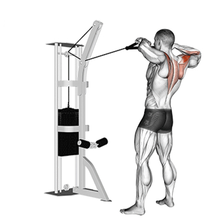
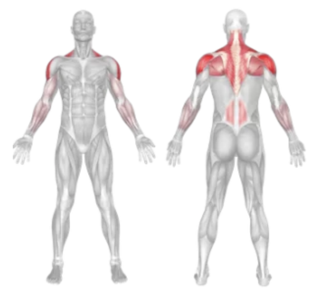
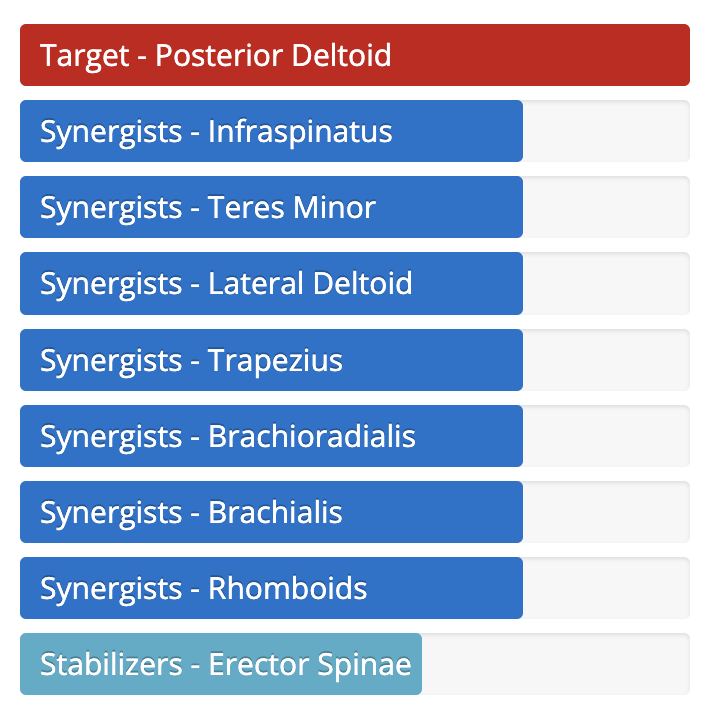

Rope Face Pull
Setup
Attach a rope handle to a high pulley on a cable machine.
Stand facing the machine with your feet shoulder-width apart.
Grasp the rope with both hands using a neutral grip (palms facing each other).
Step back slightly to create tension in the cable, holding the rope at eye level.
Keep your arms extended and your core engaged with a slight bend in the knees.

Execution
Pull:
Exhale as you pull the rope toward your face, separating your hands and keeping elbows high.
Squeeze:
Pause at the peak contraction, squeezing your rear delts and upper back.
Return:
Inhale as you slowly return the rope to the starting position with control.
Repeat:
Perform the desired number of reps while maintaining good posture.
Tips for Effectiveness
Keep Elbows Up:
Maintain a high elbow position to properly target rear delts.
Don’t Overload Weight:
Use a manageable weight to ensure strict form.
Control the Tempo:
Avoid using momentum—focus on a slow, controlled pull.
Stable Stance:
Plant your feet firmly and keep your body still during the pull.
Benefits of Rope Face Pull
Rear Deltoid Activation:
Effectively targets the rear delts for balanced shoulder development.
Postural Improvement:
Strengthens upper back muscles to combat slouching.
Rotator Cuff Health:
Supports shoulder joint stability and injury prevention.
Upper Back Definition:
Enhances muscular definition across the upper back and traps.
Muscles Worked in Rope Face Pull


Do you want to change the language of this page?
English
Malayalam
Tamil
Hindi